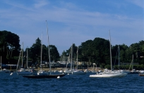
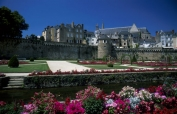
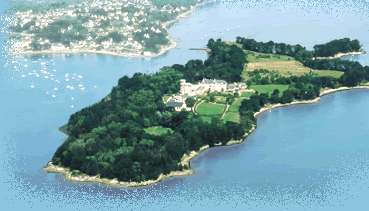

Bienvenue au camping l'Escargot
Les différentes activités de la région
|
Le Golfe du Morbihan, un des lieux les plus visités de Bretagne, appartient au "club des plus belles baies du monde". C'est un site unique, une véritable petite mer intérieure parsemée d'îles et d'îlots dont l'Île-aux-Moines et l'Île d'Arz. C'est un lieu privilégié avec ses sentiers de randonnées, ses ports, la pêche, la voile, les régates de bateaux anciens, les excursions sur les îles. À la réception du camping, vous pouvez réserver votre croisière pour visiter le Golfe du Morbihan ou bien encore Belle-Île-en-mer... Les équipages de la Compagnie des Îles vous attendent à bord de leurs embarcations. |
 |
|  |
Vannes carrefour privilégié en Bretagne Sud est une cité médiévale qui possède un patrimoine remarquable : ses vieux lavoirs, ses remparts, ses vieux quartiers piétonniers aux maisons à pans de bois. Chaque année, la région de Vannes est un lieu riche en animations, quelles soient maritimes, historiques ou culturelles. |
|
Belle-Ile en Mer est la plus vaste des îles Bretonnes (longueur 20 km, largeur 9 km avec 100 km de côtes). Elle doit son nom à la beauté et à la diversité de ses paysages. Belle-Ile offre deux types de côtes distinctes ; la côte "en dedans" particulièrement vallonnée et bordée de grandes plages de sable blond et la côte "sauvage" rocheuse et abrupte sur laquelle la mer se brise avec fracas. Réchauffée par les courants du Gulf-Stream, Belle-Ile bénéficie d'un climat particulièrement ensoleillé. Belle-Ile a toujours su également attirer les peintres et les artistes : Matisse, Monet, Arletty, Sarah Bernhardt... |

|
|  | A Larmor-Baden, nous vous conseillons vivement cette balade: à marée basse, vous pouvez passer sur l'île Berder. Cette île est magnifiquement boisée, et en faisant son tour à pied (environ 1 heure) vous découvrirez une variété végétale de type méditerranéen peu commune dans la région. Au sud de l'île, vous aurez une belle vue sur le courant très fort de "la jument", le deuxième courant d'Europe pour sa puissance. |
copyright Camping l'Escargot - Réalisé par Dev'Web - Mentions légales